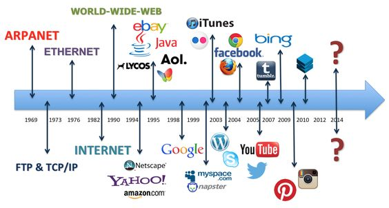

The Overview of Internet
The World Wide Web (WWW), commonly known as the web, is a vast interconnected network of information and
resources that is accessible via the internet. It has fundamentally transformed the way people interact,
communicate, and share information globally. The web is a dynamic platform that hosts a wide variety of
content, ranging from text and images to videos and applications.
Components of the Web:
- Web Pages: These are individual documents containing various forms of content, such as text, images,
videos, and interactive elements.
- Hyperlinks: Hyperlinks, often referred to simply as links, connect web pages together. They allow
users to navigate from one page to another by clicking on highlighted or underlined text or images.
- Uniform Resource Locators: URLs are web addresses that provide a unique address for each web page or
resource on the internet. They consist of the protocol (e.g., "http" or "https"), domain name, and
specific path to the resource.
- Web Browsers: Web browsers like Chrome, Firefox, Safari, and Edge enable users to access and view
web content. They interpret HTML (Hypertext Markup Language) documents and render them as visible
web pages.
Key Concepts:
- Hypertext: Hypertext is the foundation of the web. It refers to text that contains hyperlinks,
allowing users to jump to related content with a single click.
- HTML: HTML is the standard markup language used to create web pages. (“Common client-side web
technologies | Microsoft Learn”) (“Common client-side web technologies | Microsoft Learn”) It
structures content and defines how elements should be displayed in browsers.
- Web Servers: Web servers store web pages and resources and deliver them to users' browsers upon
request. Web Hosting: Websites are hosted on servers, either locally or through web hosting
services, making them accessible to users
- Web Development: Web development involves creating and maintaining websites. It encompasses
front-end development (user interface) and back-end development (server-side logic).
- Web Standards: Organizations like the World Wide Web Consortium (W3C) establish guidelines and
standards to ensure consistency and compatibility across different web technologies.
Importance:
- Information Access: The web provides access to an enormous amount of information on virtually any
topic, empowering users to learn, research, and stay informed.
- Communication: The web facilitates communication through email, social media, messaging platforms,
and real-time collaboration tools.
- E-Commerce: E-commerce platforms enable online shopping, payment processing, and global trade
- Entertainment and Media: The web hosts a wide range of entertainment content, including streaming
videos, music, games, and interactive experiences.
- Education and Learning: Online courses, tutorials, and educational resources are easily accessible
on the web.
- Business and Marketing: The web plays a crucial role in business promotion, marketing, and brand
building.
In conclusion, the World Wide Web has become an integral part of modern society, reshaping how
information is disseminated, communication occurs, and businesses operate. Its dynamic and
interconnected nature continues to evolve, driving technological innovation and transforming various
aspects of human interaction and culture.
The Timeline
- PRECURSORS AND FOUNDATIONS (1960s - 1970s)
-
- 1960s: The concept of packet-switching, which allowed data to be broken into packets
and
transmitted across networks, emerged as a solution for efficient data transfer.
- 1969: The U.S. Department of Defence’s Advanced Research Projects Agency (ARPA)
established ARPANET, connecting computers at various research institutions.
- 1970s: The creation of protocols like TCP/IP (Transmission Control Protocol/Internet
Protocol) laid the groundwork for standardized data transmission and ensured
interoperability between diverse networks.
- BIRTH OF THE WORLD WIDE WEB (1980s - 1990s)
-
- 1983: ARPANET adopts TCP/IP, leading to the transition from proprietary networking
protocols to a unified, interconnected network.
- 1989: Tim Berners-Lee's proposal for the World Wide Web introduces the concept of
hypertext and a global network of linked documents.
- 1990: Tim Berners-Lee creates the first web browser and web server, allowing the
retrieval and display of web pages.
- 1993: The introduction of the graphical web browser Mosaic popularizes web browsing
and
makes the web more accessible to non-technical users.
- COMMERCIALIZATION AND EXPANSION (1990s - EARLY 2000s)
-
- 1995: The National Science Foundation's NSFNET is decommissioned, marking the
transition
from government-funded research networks to commercially operated networks.
- Late 1990s: The dot-com bubble sees rapid growth in internet-based companies,
e-commerce, and online services.
- Early 2000s: The proliferation of broadband internet access accelerates as dial-up
connections become less common, enabling faster content delivery and multimedia
streaming.

Internet Protocols
Internet protocols are rules and conventions that are used to set a standard. They define how
data is
transmitted, received, and exchanged across computer networks via the Internet. By providing a
common language for data transmission and defining procedures for various tasks, effective
device
communication is ensured. The main purpose of internet protocols was to enable seamless and
reliable
communication between diverse devices. This means that the devices can communicate regardless of
their location, make, or model.
- TCP (Transmission Control Protocol) / IP (Internet Protocol): TCP breaks data into packets
which
ensures delivery that is reliable and a data flow that is managed. The IP manages the
addressing
and routing of data packets.
- HTTP (Hypertext Transfer Protocol): HTTP is used to transmit web pages and resources between
web
browsers and servers. it is commonly used for accessing websites and retrieving web content.
- HTTPS (Hypertext Transfer Protocol Secure): HTTPS is used to add a layer of security to
HTTP. It
does this by encrypting data exchanged between web browsers and servers. It is commonly used
for
secure online transactions, login forms, and other data exchanges which occur and are
sensitive.
- SMTP (Simple Mail Transfer Protocol): SMTP is used to facilitate sending and receiving of
emails
between email clients and servers.
- SFTP- A more secure version of FTP that uses a Secure Shell to encrypt the data during the
transfer.
- PPP- The protocol creates direct connections between two devices in order to exchange
information.
- POP3 (Post Office Protocol 3): POP3 allows email clients to retrieve messages from a mail
server
and download it to the device of the user. It is also used to manage email messages.
- IMAP (Internet Message Access Protocol): This protocol is like POP3. It allows email clients
to
retrieve messages from a server. This protocol keeps messages on the server which allows for
better synchronization. The email messages can be accessed across multiple devices.
- FTP (File Transfer Protocol): FTP is used for transferring files between computers. The
transfer
occurs over a network. There are commands that can be used, such as upload, download and
manage
files.
- DNS (Domain Name System): DNS is used to translate names into IP addresses. This allows
users to
access websites using names instead of numerical IP addresses.
- IPv4-The 4th version of the Internet transfer protocol that can use 32bit (4,294,967,296)
unique
addresses.
- IPv6-The most recent version of the internet that can hold 128bit addresses with more
security
features.
- ICMP-The protocol sends error messages related to network conditions.
- UDP-The connectionless protocol is much less reliable than TCP but is used due to its high
transfer speeds for streaming and other real-time applications.
- SSH-Used to secure logins and network access while encrypting data.
Internet Protocols (sections for different types)
Web Application Architechture
Web architecture is the layout of databases, user interfaces, application components, and
middleware
systems to
allow them to work in unison. Users known as web clients make requests for documents, and those
requests go from the
front end to the backend until the requested information is found and then returned to the user.
Software structure
refers to the structural design, while software design is in relation to the coding of the
software
and its
functionality.
Key Components of Web Application Architecture:
- DNS: The Domain Name System helps with domain name and IP address searching like a phonebook
of
the internet.
- Load balancer: Distributes tasks across multiple servers to prevent overloading.
- Web app servers: Processes user requests and returns documents to the browser through a
back-end
structure.
- Database: Holds data and allows for access, adding, and removal of data.
- Caching service: Provides storage for data relating to previous searches to improve
searching
time.
- Job Queue: Delegates jobs to be put into a schedule with those that are not as important
being
put later on the
schedule.
- Full-Text Service: Allows users to search for text and have the most relevant results
returned.
- Services: Used to add extra functionality to web applications.
- Data Warehouse: Used for storing data such as media like photos and videos.
- CDN: Used to send HTML, CSS, and JavaScript files and images.
Various Architectural Patterns in Web Application Design:
- Client-server architecture is used to divide the application into a client-side and a
server-side. The client
side is the user interface, and the server side is used for data processing.
- Client-side Programming (Front-end engineering): Front-end developers design and implement
user
interfaces using
HTML, CSS, and JavaScript.
- Server-Side Programming (Back-end engineering): Back-end developers write code that runs on
the
server, handling
data processing, business logic, and interactions with databases.
- Full-Stack Engineers: Full-stack developers have expertise in both front-end and back-end
development.
- Component-based architecture is used to divide an application into three components: model,
view, and
controller.
- Distributed architecture is used to divide an application into small services that are
independent and
communicate through APIs.
- Real-time architecture enables real-time, two-way communication between the client and
server.
- Cloud-based architecture involves writing code as functions triggered by events, managed by
cloud providers.
- Mobile-focused architecture combines web and mobile apps for fast loading times and offline
capabilities.
- Microservices: This architectural style involves breaking down the application into smaller,
loosely coupled
services that can be developed, deployed, and scaled independently.
Web architecture
Client side
Client-side computers request information while server-side computers serve the information
(Castillo, 2022).
Client-Side Engineering: Relates to how software is designed to be easy to use
and
visually
appealing. It uses its own languages such as HTML, CSS, and JavaScript. It affects what the
users
see and interact
with. It usually refers to the home pages of websites.
Server-side Engineering
Server-Side Engineering: Relates to how the backend is designed to perform
efficiently and
functionally. It has its own languages such as Python, PHP, Java, C#. It affects how the
application
works and how
it is coded. The server-side code is responsible for data management and security.
Server-side scripting
Comparison Table
| Aspect |
Client-Side Engineering |
Server-Side Engineering |
| Location |
User’s device - browser |
Server |
| Languages |
HTML, CSS, JavaScript |
Python, PHP - they are backend languages |
| Interaction |
Handles user input interactions |
Request processing and database communication |
| Data Storage |
Limited to things such as cookies |
Data is stored and managed in a database |
| Accessibility |
Visual representation |
Manages data availability |
| Security |
Basic - ensures that user input is valid |
Security protocols - authentication and data protection |
| Responsibility |
UI, interactions, visuals |
UI, interactions, visuals |